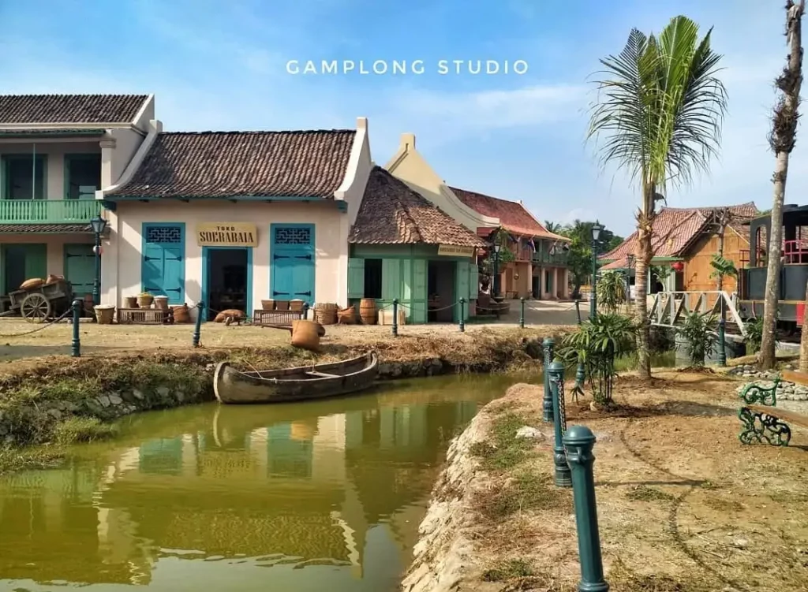
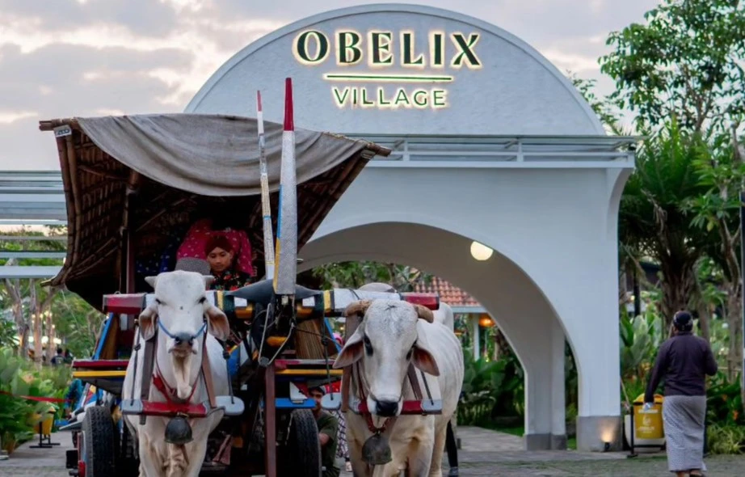
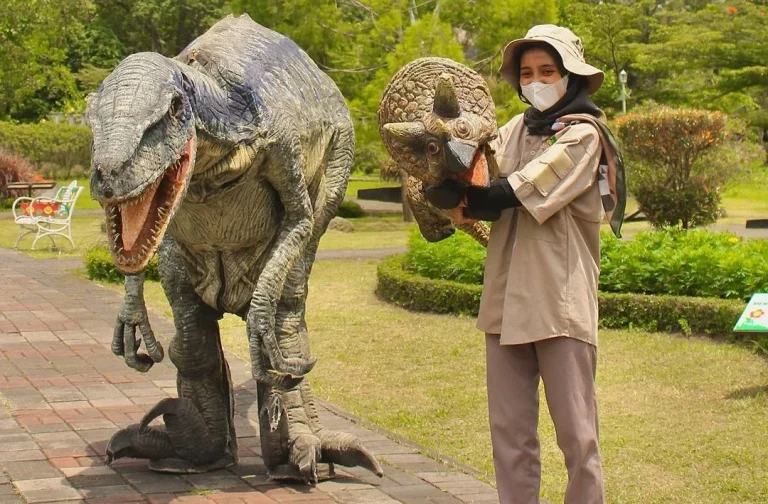

| NO |
FOTO |
OBYEK WISATA |
DESKRIPSI |
| 1. |
 |
Jogja Bay Waterpark (Waterboom Jogja) |
Jogja Bay Waterpark atau Waterboom Jogja merupakan salah satu waterpark terbesar di Asia Tenggara. Nggak nanggung-nanggung, di sini ada banyak wahana permainan yang seru banget, di antaranya adalah Ziggy Giant Barrels, Memo Racer, Brand Boomeranggo, Volcano Coaster, dan masih banyak lagi. Nggak heran kalau Jogja Bay Waterpark jadi tempat wisata Jogja terhits saat ini! |
| Maguwoharjo, Kecamatan Depok, Kabupaten Sleman |
2. |
 |
Studio Alam Gamplong |
Studio Alam Gamplong merupakan objek wisata yang dijuluki mini Hollywood karena desain bangunannya yang unik dan cocok untuk spot berfoto. Tempat ini juga pernah digunakan untuk syuting film Habibie & Ainun serta Bumi Manusia. |
| Gamplong 1, Sumberrahayu, Kecamatan Moyudan, Kabupaten Sleman |
| 3. |
 |
Alun-Alun Kidul |
Alun-Alun Kidul Jogjakarta
Alun-Alun Kidul Yogyakarta atau Alkid, merupakan alun-alun bagian selatan Jogja yang juga menjadi halaman belakang dari Keraton Kesultanan Yogyakarta. Ciri khas dari alun-alun ini adalah adanya dua pohon beringin yang ada di tengah alun-alun. Tempat ini menjadi tempat publik dan selalu ramai oleh orang, baik wisatawan maupun masyarakat. |
| Patehan, Kraton, Kota Yogyakarta |
4. |
 |
Obelix Village |
Selalu ada tempat wisata menarik di Jogja, salah satunya adalah Obelix Village. Secara umum, tempat ini merupakan destinasi wisata untuk keluarga dengan nuansa pedesaan yang asri. Ada banyak spot seru di sini, seperti Flower Garden, Little Zoo, River Deck, dan masih banyak lagi |
| Jl. Kenangan, Pandowoharjo, Kecamatan Sleman, Kabupaten Sleman |
| 5. |
 |
Merapi Park |
Merapi Park merupakan wisata Jogja terhits saat ini yang dilengkapi banyak spot foto Instagramable dengan latar replika ikon terkenal dunia bernama The World Landmark. Selain spot foto, ada juga atraksi dan wahana seru, seperti Cats House & Rabbit Town, Jemparingan, Cowboy Village, sampai Kids Waterpark. |
| Jl. Kaliurang KM 22,5, Kecamatan Pakem, Kabupaten Sleman |
6. |
 |
Dino Park |
Dino Park merupakan tempat wisata yang masih menjadi bagian dari Merapi Park. Tempat ini mengusung konsep wisata edukasi dinosaurus yang pasti disukai anak-anak. Di sini kamu bisa lihat robot dinosaurus dan berfoto di spot yang Instagramable. Yuk, beli tiket Dino Park sekarang juga! Jangan lupa cek blog atau sosmed Goers untuk dapatkan voucher potongan harga!. |
| Jl. Museum Gn. Merapi, Hargobinangun, Kecamatan Pakem, Kabupaten Sleman |
| 7. |
 |
HEHA Ocean View
|
HEHA Ocean View merupakan tempat wisata Jogja yang letaknya di tebing pantai. Oleh karena itu, tempat ini menawarkan pemandangan laut selatan yang luas dan jelas dari atas tebing. Di tempat ini juga menyediakan spot foto Instagramable dengan latar pemandangan laut selatan. |
| Bolang, Girikarto, Kecamatan Panggang, Kabupaten Gunung Kidul |